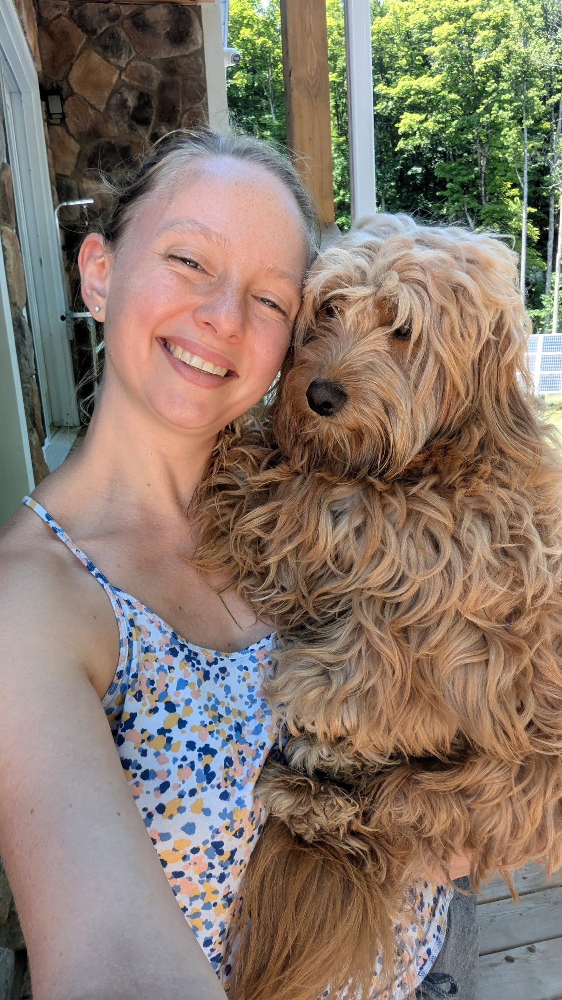
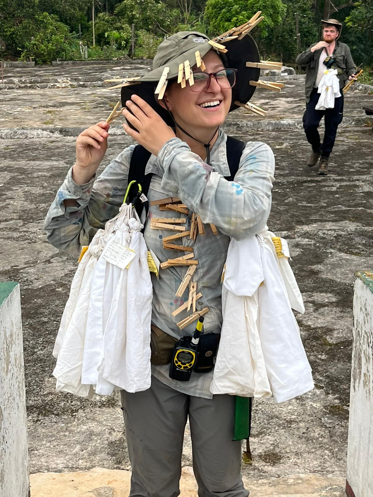

2024 teaching team
Course instructors
Mete is a 3rd year PhD student in the Dept. Ecology and Evolutionary Biology at UTSG, and is co-advised by Matt Osmond & Nicole Mideo. He uses mathematical models to address questions in evolutionary genetics and ecology. He is currently developing theory to understand patterns, causes, and consequences of recombination rate variation. Mete was an undergraduate math & statistics student at the University of Idaho. There, he worked on the ecology of gene drive interventions against vectored diseases, understanding how continuous spatial structure can affect species coexistence, and forecasting the dynamics of Chinook salmon in the Willamette River system. He loves R - and teaching this course! Outside of science, Mete enjoys listening to podcasts, cooking, and cycling between Toronto neighborhoods in search of coffee.

Zoë is a PhD student in the Wright and Barrett labs at UTSG. She studies the genome of a weedy plant to better understand how transposable elements affect sex chromosome evolution. She taught herself how to use R during her honours thesis and fell in love because it was much kinder than Lisp or C++ and, most importantly, because aesthetics. Zoë makes plots from aggressively large genomic data sets and spends a lot of time literally bash-ing her data into a file small enough for her computer to load into RStudio. For Zoë, the best way to work in R is while patting her puppies.
Teaching assistants

Gavia is a PhD candidate in the Mahler lab on the StG campus. She works with the tropical Anolis lizards to understand how macroevolution shapes local patterns of community diversity and structure. When she’s not wandering around Caribbean islands catching lizards or spraying them with paint, she is happily ensconced on her couch working in R or exploring the many bakeries and bookstores of Toronto.
Jessie is a PhD student in the Frederickson lab at UTSG. She studies plant-microbe interactions using high- throughput experimentation in duckweeds. She fell in love with R during her time as an undergraduate and took EEB313 in 2020, simultaneously sharpening her coding skills while conducting research alone in the lab. Jessie loves to spend too much money on fancy coffee as she types away, making sure her code is well-annotated and her figures look beautiful. Outside of work, she enjoys caring for her many houseplants and aquariums, finding new delicious eats, and admiring other people’s pets.